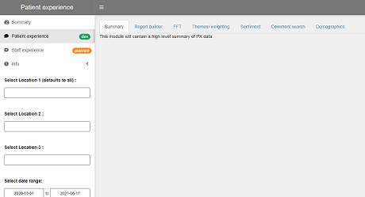
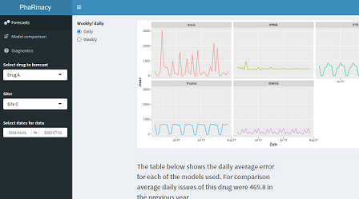
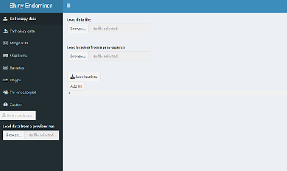

Skip to main content
Skip to footer
Main Menu
Blog
Understanding Your Data
About
CDU Data Science Team
Analysis by CDU Data Science Team for Nottinghamshire Healthcare NHS Foundation Trust.
Apps
Patient Feedback
Shiny dashboard visualising and analysing patient experience data from Nottinghamshire Healthcare NHS Foundation Trust.

Text Mining Patient Experience Feedback
Text mining and visualization of NHS patient feedback.
Pharmacy Forecasting
This project aims to develop, test and implement an open source analytical tool in R that will support and improve existing inventory management practices within our Trust pharmacy.

EndomineR app
EndoMineR-Shiny is the interface for the package
EndoMineR
The package aims to extract information from endoscopic and associated pathology reports.

Healthcare SPC (Emergency Care Data Set)
This was a Shiny application created for the Nottingham & Nottinghamshire ICS (Integrated Care System) as part of the data analysis for Covid-19 to analyse the Emergency Care Data Set (ECDS) using a series of Statistical Process Control charts (SPCs) to determine which services where seeing an effect on admissions because of the pandemic.
systemews
A system to forecast numbers and discharges of medically safe patients with a supported discharge plan. This project is part of the
Health Foundation
's Advancing Applied Analytics programme.
Templates
CDU Data Science Team Blog template
Blog template using distill with GitHub Actions set up
.
Nottinghamshire Healthcare NHS Foundation Trust Branded Slides
Nottinghamshire Healthcare NHS Foundation Trust template slides in R using xaringan
.
Simple Hugo notebook
Simple Hugo notebook
.
Packages
nottshcMethods
A collection of functions to help with visualising and analysing clinical data.
honos
Visualising and Analysing the HoNOS (Health of the Nation Outcome Scales)
nottshcPublic
demonstrating how we make use of R to work with databases